Introduction
In this tutorial, we are going to create a lake using Torque 3D's WaterBlock object. Since this will be an isolated body of water, you should not need more than one WaterBlock to get the job done. We will be adjusting several WaterBlock properties to obtain a very placid appearance.
Setup
This article will use a new project created from the Full template, which includes sample assets for testing and learning. To save time and focus on the World Editor we will use the sample assets and learn about asset creation later.
None of the modifications you are about to make are
required for future tutorials, so feel free to create a new level or
use an existing one for testing. As long as you have access to existing
materials, you are good to go. For this article, we are going to be
using a new level.
In order to simulate a realistic body of water, we are
going to start by adding a new TerrainBlock. If you do not know how to
add terrain, click here to review the TerrainBlock Guide. If you are
familiar with the process, go ahead and create a new terrain from the
File Menu. We do not need anything fancy, so use the following
information:
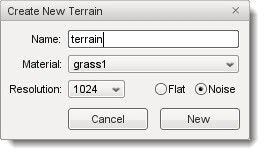
This should result in a mountainous terrain with plenty of valleys in which to add a body of water. If you are not happy with the results, use the Terrain Editor or create a new TerrainBlock all together. In the end your terrain should look similar to this:
(click here to enlarge)
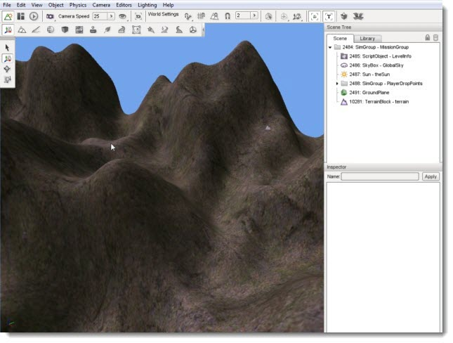
Now that we have basic terrain, we will move on to the actual WaterBlock creation.
Adding a WaterBlock
To add a Water Block: switch to the Object Editor tool; click the Library tab; click the Level sub-tab; double-click the Environment folder; then locate the Water Block entry:
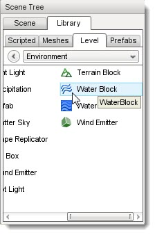
Double-click the Water Block entry. The Create Object dialog box should appear:

Enter a name for your new Water Block then click the Create New button. A square body of water will be added to the scene. This is your WaterBlock. Like any other object, you can manipulate its transform using the gizmos.
(click to enlarge)

Before we proceed with modifying the WaterBlock properties,
we should move the body of water to a more appropriate area. With the
object selected, use the Transform Tool to move it to a valley in your
terrain. It does not have to be perfect, but it will help simulate a
lake in a crater.
(click to enlarge)
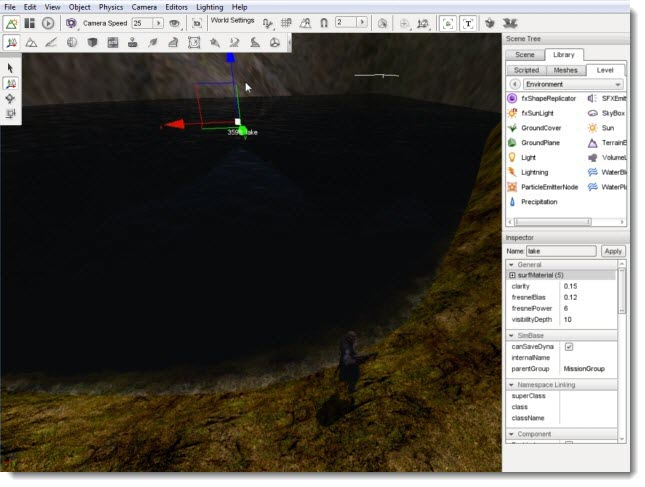
The WaterBlock edges will clip appropriately and reflect the interaction with the terrain via incoming wave textures wherever it meets the land.
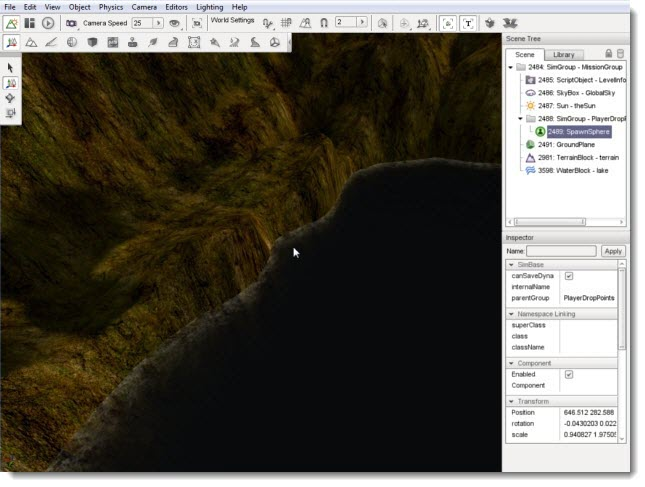
Now that we have a positioned WaterBlock, we can begin editing its properties.
Color and Fog
We are now going to perform a few minor manipulations. For this article, we are going to take a stock WaterBlock and turn it into a lake. Landlocked bodies of water such as lakes tend to be calmer than an ocean or river.
The default WaterBlock is too choppy, fast, and murky. We are going to simulate a calmer, clearer lake similar to the placid Crater Lake in Oregon:
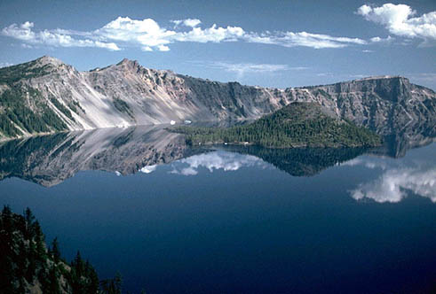
We will not need to modify all of them to simulate a lake. First, we are going to decrease the murkiness of the WaterBlock, which represents how clear the water is. Scroll through the properties until you see the Underwater Fogging section. Change the waterFogDensity field to 0.01.
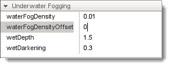
This is a drastic reduction. If you move your camera under the water, the difference
is immediately noticeable.
0.5 Fog Density Under Water
(click to enlarge)
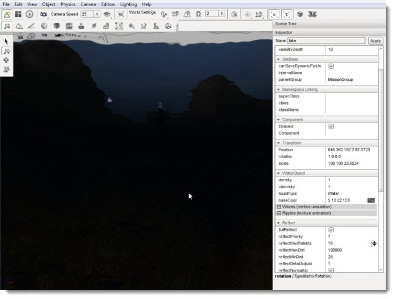
0.01 Fog Density Under Water
(click to enlarge)
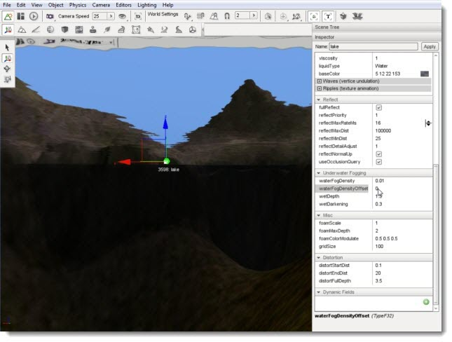
0.5 Fog Density Above Water
(click to enlarge)
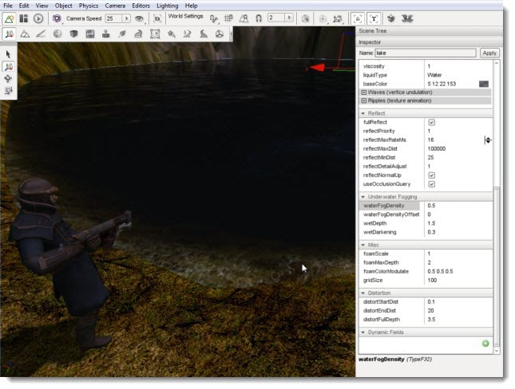
0.01 Fog Density Above Water
(click to enlarge)
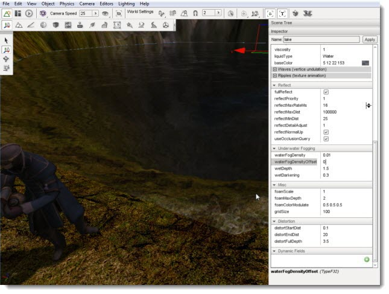
Our lake is a little too clear at this point. Instead of
playing around with the fog, we are going to adjust another property to
reflect the color changes at lower depth. Under the Water Object section of
the properties, find the fresnelBias field. Change the value
to 0.01.
The change is subtle, but if you focus on the deepest points of the water you should see a difference. What we have done is decreased the water's reflection amount based on the underwater fog intensity, which
will stronger toward the middle where the water is deepest.
0.12 Fresnel Bias
(click to enlarge)
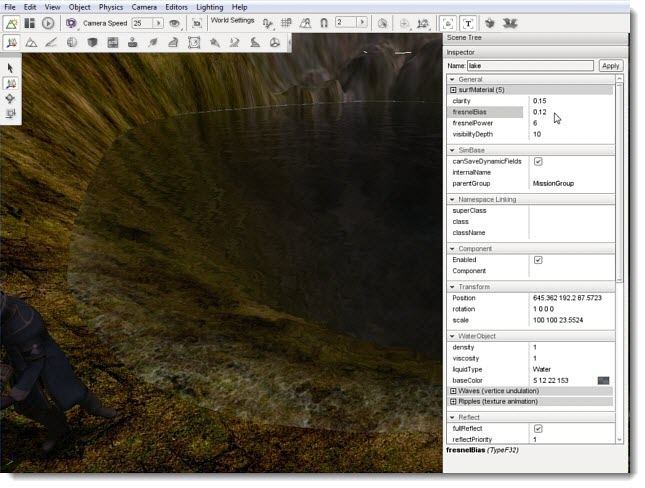
0.01 Fresnel Bias
(click to enlarge)
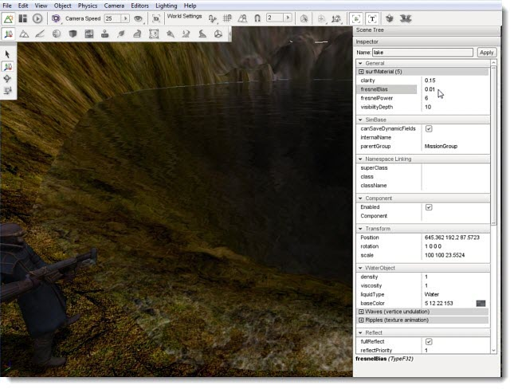
We will make one last adjustment to polish the high level appearance of
the lake. The stock color is a little dark, but that can be modified
easily. Under the WaterObject property section there is a field
called baseColor. You can modify the value manually, but we are going
to use a color picker by clicking on the square box at the end of the
line.
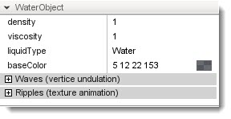
The Color Picker dialog will appear immediately. With this
dialog, we can adjust the color's hue, intensity, and alpha. To
illustrate a dramatic change, adjust the picker's location to get a
strong red value.
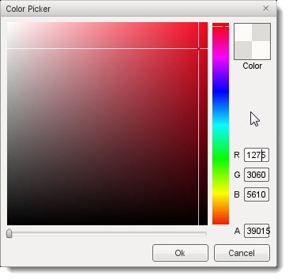
After you click OK, our lake will take on a morbid appearance.
(click to enlarge)
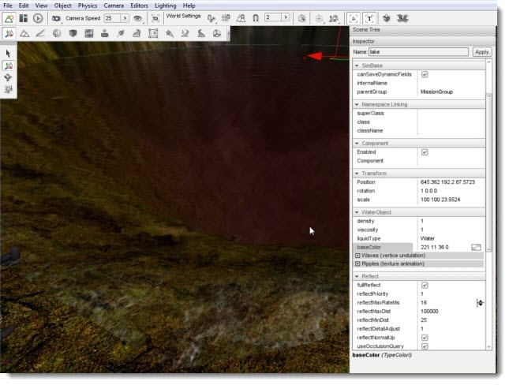
If we were making a horror game this would fit in nicely, but we are making a normal lake. Open the Color Picker again and aim for a softer blue hue.
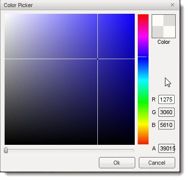
We have progressed from a murky pond to a clear, blue
lake. Even with these small adjustments, we already have a drastic
change in appearance from the default WaterBlock.
(click to enlarge)
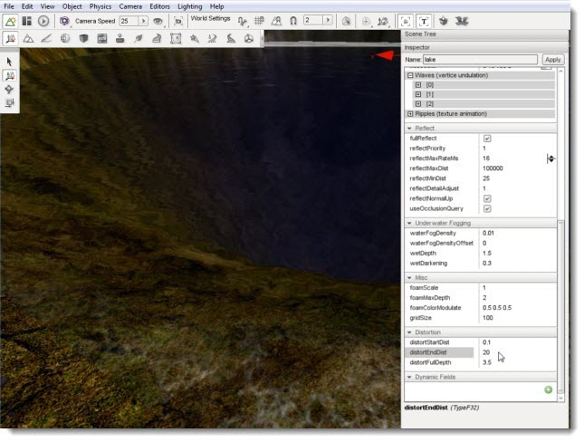
Calming the Water
The final changes we are going to make will reduce activity of the WaterBlock to simulate the waves on a lake. The oceans tend to be wavier than a lake because the wave action is created by currents, wind, and the gravity from the moon. On smaller lakes the wave action is cause solely by wind so they tend to be much less wavy than the ocean. Locate the Distortion section of the properties.
We need to intensify the distortion, which we can do by
reducing that range. Reduce the distortEndDist from 20 to 1. After you
make this change, you should immediately notice that objects below the
water are more distorted.
(click to enlarge)
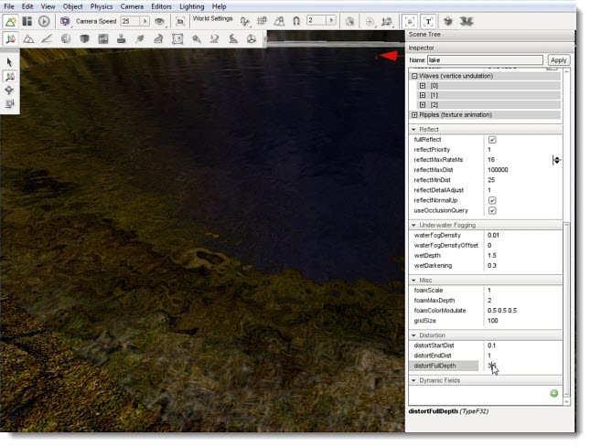
Finally, jump to the WaterObject section of the properties and make the changes listed in the table below to alter the wave action:
| Property |
New Value |
| Wave[0]waveDir |
1 0 |
| Wave[0]waveSpeed |
0.1 |
| Wave[0]waveMagnitude |
0.01 |
| Wave[1]waveSpeed |
0.01 |
| Wave[1]waveMagnitude |
0.01 |
| Ripple[0]rippleSpeed |
0.01 |
| Ripple[1]rippleSpeed |
0.01 |
| Ripple[2]rippleSpeed |
0.01 |
After you have made these changes, your lake should be complete.
Your waves will be slower and more dramatic.
Final Above Water Appearance
(click to enlarge)
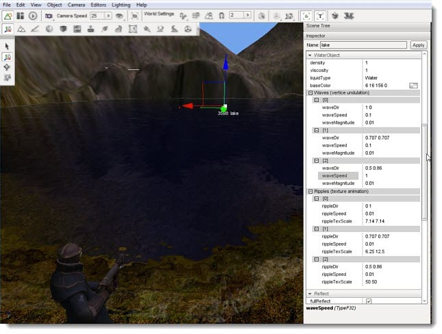
Final Below Water Appearance
(click to enlarge)
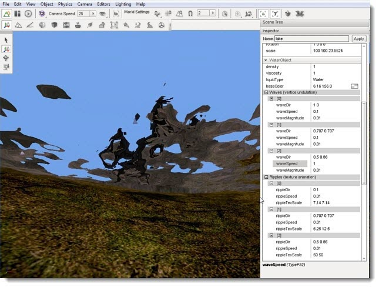
Conclusion
This article has provided a strong starting point for adding lakes to your terrains to create more visually appealing levels.
|
{kind=link}
{kind=link}
{kind=link}
{kind=link}
{kind=link}
{kind=link}
{kind=link}
{kind=link}
{kind=link}
{kind=link}
{kind=link}
{kind=link}
{kind=link}
{kind=link}